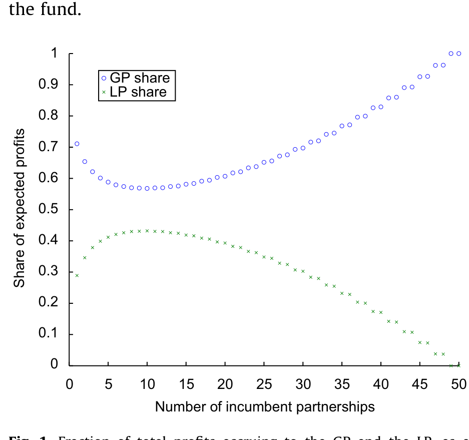
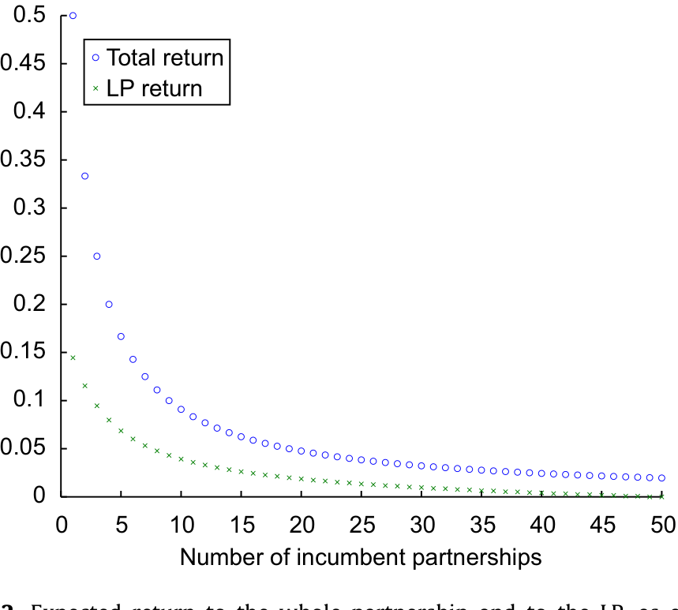
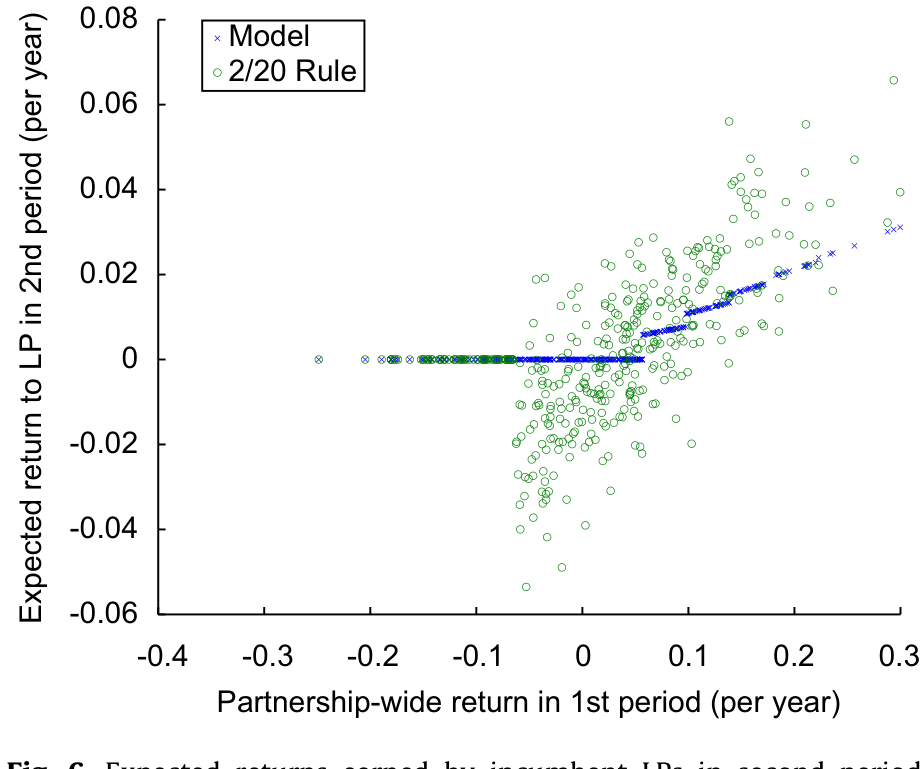
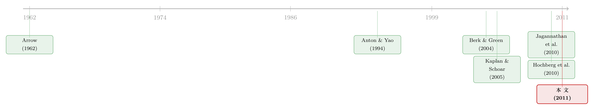

把秘密说给你听，你就成了我的对手——对冲基金业绩为什么能「持续」
本文读的是 Glode & Green (2011, Journal of Financial Economics)：对冲基金业绩之所以会「持续」，不是因为基金经理的个人天赋无法被竞争掉，而是因为他赚钱的「秘诀」一旦为了募资而泄露给投资人，投资人就握住了一张可以转投竞争对手的底牌——正是这张底牌，逼着在位经理年复一年地把超额收益分给投资人。
1 一个被 Berk-Green 解释掉、却又重新冒出来的谜
先讲一个我们本以为已经讲完了的故事。
2004 年，Berk 和 Green 给共同基金（mutual funds）的世界写下了一条近乎优雅的定律：在一个由理性投资者构成的竞争性市场里，业绩是不会持续的。逻辑链条干净得让人挑不出毛病——投资者通过过去的收益去学习基金经理的能力，钱（资金流）追着好业绩跑；但管理规模存在规模不经济 (decreasing returns to scale)，钱涌进来之后，边际收益被摊薄，直到投资者向前看时只剩下一个有竞争力的、等于零的预期超额收益。于是：资金流对业绩敏感，业绩本身却不持续。能力带来的租金，全被经理人通过扩大规模收入囊中。
共同基金的数据，恰好就长这个样子：业绩几乎不持续，仅有的一点持续性还集中在最差的那批基金里（Carhart, 1997），而那更像是投资者疏于赎回造成的「惰性」。
可问题来了。对冲基金（hedge funds）偏偏不是这样。Jagannathan, Malakhov, and Novikov (2010) 把数据摆出来：表现好、因而能吸引到新资金的对冲基金，业绩是持续的。这就尴尬了。如果资金流也在追逐对冲基金的好业绩——看上去确实如此——那么按 Berk-Green 的剧本，基金经理为什么不顺势扩大规模、或者直接把费率提上去，把未来的租金一口吃掉呢？
这正是本文的「钩子」：业绩持续，等价于投资者向前看时仍然能赚到超额收益。 在一个理性的市场里，这本该被经理人提价提走。Glode 和 Green 要回答的，就是这块租金凭什么落不到经理人手里、反而年复一年地留给了投资人。
2 反转：超额收益的来源，可能根本不是「他这个人」
接着，一个自然的问题是：Berk-Green 的剧本里，到底是什么东西被竞争掉了？答案是——专属于经理人本人的能力 (ability unique to the manager)。这种能力别人学不走，所以只要把规模做到边际收益归零，故事就闭合了。
但真正关键的一步在于：对冲基金的超额收益，未必只来自「他这个人」。
它可能来自一套创新的交易策略、一个正在兴起的板块、一种可以被别人照搬的技术或头寸。换句话说，这是一种可被侵占的 (expropriable) 知识。作者用一段广为流传的轶事点破这层窗户纸：2006 年，靠做空次贷一战成名的对冲基金经理 John Paulson，向一位潜在投资者 Greene 展示了自己的计划；结果 Greene 没等基金成立，转身就自己做了一笔几乎一模一样的复杂按揭交易，抢在了朋友前头。
这就是对冲基金面对的两难，也是它们近乎偏执地讲究保密的原因。这里我们可以顺带回答一个更基础的问题：为什么对冲基金普遍选择有限合伙 (limited partnership) 这种私募形式？因为公募意味着繁重的披露与监管，而披露就意味着信息泄露、租金被侵蚀。组织形式的选择，本身就是对「保密」需求的内生回应（这与 Agarwal, Jiang, Tang, and Yang (2010) 的实证发现一致）。关于「私密性」如何反过来塑造了私募合伙的边界，可参见《把名字从名单上划掉：当「透明」成了顶级 VC 拒绝公募资金的理由》。
于是，谜题被悄悄改写了：不是「为什么经理人提不了价」，而是「当超额收益来自一个可泄露的秘密时，谁，凭什么，分到了这块租金？」
3 模型设定：一个会「自我侵蚀」的赚钱机会
本文是一篇地道的模型论文，我们就按它的推导一步步走。
市场上有两类风险中性的玩家：拥有投资机会、却没有资本的普通合伙人 (general partners, GP)，数量为有限的 \(M\)；以及拥有资本、却缺乏知识、网络、时间或经验的有限合伙人 (limited partners, LP)，数量为可数无穷、彼此同质。GP 向 LP 发出一个「要么接受、要么走人」的最后通牒式 (take-it-or-leave-it) 报价——这相当于让 GP 当一个 Stackelberg 领导者，在「第一最优」下拿走投资机会的全部净现值，而投资者只赚到有竞争力的回报。这一点，和公司金融教科书里「企业面对竞争性资本市场」的经典叙事如出一辙。
每笔投资只持续一期，且可以连续地放大。第 \(i\) 个 GP 投入 \(Q_i\)。关键在成本函数：除了自身规模带来的成本，别的合伙人投在同一策略/板块上的钱也会抬高你的成本。记 \(Q \equiv \sum_j Q_j\) 为所有合伙人在该策略上的总投入，则第 \(i\) 个合伙人的已实现利润（式 1）为
$$Q_i[f+e] - \frac{C}{2}\,Q_i Q,\qquad Q \equiv \sum_j Q_j$$
这里 \(f\) 是该策略的预期盈利能力 (expected profitability)——也就是通过以往参与积累下来的信息所估计出的超额收益，\(e\) 是满足 \(E(e\mid f)=0\) 的回归误差。这个设定巧妙之处在于：当合伙人独占市场时，成本退化为熟悉的二次型 \(\frac{C}{2}Q_i^2\)；而把所有人的成本加总，又恰好得到整个板块的二次成本 \(\frac{C}{2}Q^2\)。它同时刻画了两层规模不经济——做大单只基金本身越来越难（流动性差的资产更难加仓、雇人越多越损耗），以及竞争者涌入同一策略会拉低所有人的利润。
给定 \(f\)，每个合伙人选 \(Q_i\) 去最大化预期利润（式 2）：
$$Q_i f - \frac{C}{2}\,Q_i \sum_{j=1}^{N} Q_j$$
在对称的纳什均衡 (Nash equilibrium) 下，每个合伙人的最优投入（式 3）、最优预期利润 \(P(f,N)\)（式 4）、以及费前毛收益率 \(R(f,N)\)（式 5）分别为：
$$Q^*(f,N) = \frac{2f}{C}\,\frac{1}{N+1}$$
$$P(f,N) = \frac{2f^2}{C}\,\frac{1}{(N+1)^2}$$
$$R(f,N) = \frac{P(f,N)}{Q^*(f,N)} = f - \frac{C}{2}Q = \frac{f}{N+1}$$
请记住式（5）这个最干净的结论：毛收益率就是 \(f/(N+1)\)。知道这个秘密的人越多（\(N\) 越大），每个人能分到的收益率就越薄。这是整篇文章的物理直觉——竞争者的数目 \(N\)，就是侵蚀超额收益的那把刀。
4 真正的机器：把「泄密的威胁」变成讨价还价的筹码
然后，进入全文最核心的一步。
设想一对在位的 GP 与 LP，他们在上一期共同投资中都已经知道了 \(f(>0)\)。现在 GP 想让 LP 续投，于是发出一个最后通牒式报价。表面上，GP 是 Stackelberg 领导者，拥有全部议价权；LP 似乎只能接受那个让自己恰好不亏的报价。
但 LP 手里其实攥着一张牌：他也知道 \(f\)。如果他拒绝在位 GP，他可以去找一个尚未入场的、非在位的 GP，把 \(f\) 如实、可信地披露给对方，再对这个新 GP 发出自己的最后通牒。换句话说——为了募资而做的披露，亲手为投资人制造了一个外部选择 (outside option)。
这就是整台机器的齿轮。我们用 \(V(f,N)\) 记 GP 的预期收益、\(W(f,N)\) 记 LP 的预期收益（都写成「当前已有 \(N\) 个 GP 知情并投资」的函数）。在位 GP 要留住 LP，他能拿到的，是整个合伙的利润 \(P(f,N)\) 减去他必须付给 LP 的那一份；而「必须付」的下限，正是 LP 若转投一个新 GP（把知情者数目推到 \(N+1\)）所能得到的 \(W(f,N+1)\)。于是（式 6）：
$$V(f,N) = P(f,N) - W(f,N+1)$$
那 \(W(f,N+1)\) 又是多少？这位被拒的 LP 去找第 \(N+1\) 个 GP，发出最后通牒。这个报价必须至少补偿新 GP 转去找另一个新 LP 的所得——而新 GP 也会理性地预料到，那位被自己拒掉的 LP 又会去找下一个 GP，把竞争者推到 \(N+2\)。层层递推，得到（式 7）：
$$W(f,N+1) = P(f,N+1) - V(f,N+2)$$
把（7）代回（6），再递归下去，就得到 GP 与 LP 收益的两条对称递推式（式 8、式 9）：
$$V(f,N) = P(f,N) - P(f,N+1) + V(f,N+2)$$
$$W(f,N) = P(f,N) - P(f,N+1) + W(f,N+2)$$
下面把式（8）拆开来标注，因为它就是这篇论文的「BS 公式」：
这就是全文最漂亮的洞见：「寻找替代伙伴所导致的竞争者扩张」，在交替出价 (alternating-offer) 的讨价还价博弈里，扮演了一个内生的贴现因子。 它不是外生给定的 \(\beta\)，而是由「每多披露给一个人，市场就多一个竞争者、利润就薄一分」这件事内生决定的。
把递推式一路 telescoping 求和（注意 \(P(f,N)\) 随 \(N\) 递减、且趋于零），可以得到
$$V(f,N) = \sum_{k=0}^{\infty}\big[\,P(f,N+2k) - P(f,N+2k+1)\,\big] \;>\; 0$$
每一项都为正，所以即便 LP 在最后通牒博弈里毫无议价权，他也能拿到一块严格为正的租金。下图把这个分成画了出来：随着知情者数目变化，总利润在 GP 与 LP 之间如何切分。

Figure 1: Fraction of total profits accruing to the GP and the LP, as a
而 LP 拿到的那一份收益是正的——它不会被竞争压到零，如下图所示。

Figure 2: Expected return to the whole partnership and to the LP, as a
5 于是，持续性就「掉」了出来
到这里，谜底其实已经呼之欲出了。
回到那个被改写过的问题：投资人向前看时为什么还能赚到超额收益？因为 \(W(f,N)\)——LP 的均衡收益——是 \(f\) 的增函数。\(f\) 越高，意味着这个策略未来的盈利能力越强，LP 转投新 GP 的外部选择就越值钱，他的保留价格 (reservation price) 就越高，在位 GP 不得不让给他的那一份租金也就越大。
而 \(f\) 又是和过去的业绩正相关的（这正是「学习」的题中之义）。把这两段串起来：过去业绩好 → \(f\) 高 → LP 的外部选择更值钱 → LP 分到的份额更大 → LP 的收益在期与期之间持续。 业绩持续，不是因为经理人的天赋无法被竞争走，而是因为「保密的必要」把一部分议价权拱手让给了知情的投资人。

Figure 6: Expected returns earned by incumbent LPs in second period
这里有一个值得停下来品味的反直觉之处：模型对「持续性」唯一致命的假设，是有效的禁止披露/竞业条款。如果 GP 能在任何敏感信息泄露之前，就让 LP 签下具有约束力的保密或竞业承诺，那么「卖点子」的难题就被合约解决了，模型反而预测不会有持续性。可现实里，GP 们偏偏要费尽周折去回避这种事前承诺——他们宁愿靠保密，也不愿靠一纸合约。这恰恰说明，软信息 (soft information) 那一套「事前承诺披露」的故事，抓不住对冲基金对保密的执念。
6 把模型推到数据：2/20 规则与「一半的持续性」
光有理论还不够。作者把模型校准到 Jagannathan, Malakhov, and Novikov (2010) 和 Kosowski, Naik, and Teo (2007) 报告的对冲基金横截面矩，然后问一个尖锐的问题：模型能不能在复现观测到的持续性的同时，匹配业界流行的 2/20 收费规则（2% 的管理费 + 20% 的业绩提成）所隐含的行为？
答案是诚实而有趣的：两者只能取其一，无法兼得。
统一套用到所有合伙的 2/20 规则，不允许 GP 的收益像理论所预测的那样、对过去业绩那么敏感。换个说法：当你把模型参数调到「2/20 能生成一个经验上合理的持续性水平」时，理论上的最优分成规则所生成的 LP 收益持续性会低于经验估计——但仍然在经济上显著，大约是经验估计的一半。这等于在说：信息溢出机制能解释对冲基金业绩持续性中相当大的一块，但僵硬的 2/20 规则本身，又把这个机制能传导的力度压住了一截。
7 文献脉络
把镜头拉远，这篇论文其实坐在两条河流的交汇处。
一条河是点子的经济学 (economics of ideas)。它至少可以追溯到 Arrow (1962) 对「发明与信息」的经典论述：知识一旦披露就难以收回，这让「卖点子」天然困难。Anton and Yao (1994, 2000) 把这个困境讲得最透——「当买家在揭晓之前无法评估一个点子的价值、而卖家在揭晓之后又无法保护它时，点子就很难卖出去」；d'Aspremont, Bhattacharya, and Gérard-Varet (2000) 则进一步研究了创新知识的讨价还价与分享。本文的贡献，是指出「竞争加剧的威胁」恰恰能缓解这个卖点子的难题——它内生地决定了两个知情者之间的相对议价权。关于「被侵占的知识反而成了激励」，可参见《被「偷走」的增长》。
另一条河是业绩持续性 (performance persistence)。Berk and Green (2004) 用「学习能力 + 规模不经济」解释了共同基金为何不持续；Carhart (1997) 则在数据上确认了这一点。到了私募领域，故事开始分叉：Kaplan and Schoar (2005) 发现私募股权存在持续性，Hochberg, Ljungqvist, and Vissing-Jørgensen (2010) 把风投的持续性归因于在位 LP 对 GP 能力获得的「软信息」并据此「敲竹杠」（hold-up），其内核与 Sharpe (1990)、Rajan (1992)、von Thadden (2004) 的关系型银行模型一脉相承。本文瞄准的是相似的事实，却用了一个完全不同的机制：不是关于「GP 是谁」的软信息，而是关于「策略本身」的、会泄露给竞争者的硬信息。两种机制很可能同时在起作用，但本文这一套，更贴合对冲基金对保密的偏执。关于风投里 GP/LP 如何切分那块「饼」，可参见《VC 拿走的，从来不止「一半的饼」》。

8 评论与延伸（Q&A + 研究方向）
(a) 几个可能的疑问
Q：这和 Berk-Green (2004) 到底差在哪一处？
差在「被学习的东西是什么」。Berk-Green 里，投资者学的是专属于经理人的能力，它学不走，所以规模做到边际收益归零即可闭合，结果不持续。本文里，投资者学的是可被侵占的策略盈利能力 \(f\)，它一旦披露就能转投他人——正是这种可转移性给了 LP 外部选择和议价权，于是持续性内生地出现。
Q：GP 明明有全部议价权（最后通牒），LP 凭什么还能分到正收益？
因为「最后通牒」只决定了怎么分，没决定 LP 的保留价格。LP 的保留价格由他出走去找新 GP 的所得 \(W(f,N+1)\) 决定，而这又取决于披露能制造多少新竞争。GP 要留住 LP，就必须出价不低于这个外部选择，所以即便 GP 先出价，LP 的份额也严格为正。
Q：「竞争扩张当贴现因子」这个说法是不是只是个比喻？
不是纯比喻。在交替出价博弈里，外部选择越差、等待越亏，相当于贴现越狠。这里每多披露一个人，未来利润 \(P(f,N+k)\) 就被压低一档，正好起到「贴现」的作用——而且这个「贴现率」是由 \(P(f,N)\) 随 \(N\) 衰减的速度内生决定的，不是外生塞进去的 \(\beta\)。
Q：模型预测持续性，最脆弱的假设是哪一条？
是「不存在有效的事前保密/竞业承诺」。只要 GP 能在披露前让 LP 签下有约束力的禁止竞业条款，卖点子的难题就被合约解决，模型立刻预测没有持续性。作者的辩护是：现实中 GP 恰恰在极力回避这种事前承诺，这本身就是机制存在的间接证据。
Q：那为什么 GP 不干脆提价、把租金一次收走？
因为提价并不能消除 LP 的外部选择。只要 LP 知道 \(f\)、且能把它带去新 GP，他的保留价格就被外部市场钉住了；GP 提价超过这个保留价格，LP 就会走人并制造一个新竞争者，反而拉低所有人的利润。提价提不动，是因为「秘密已经说出口」这件事无法撤销。
Q：校准里「只能匹配持续性或 2/20、不能兼得」，是模型的硬伤吗？
与其说硬伤，不如说是一个诚实的张力。它说明现实中僵硬统一的 2/20 规则，比理论最优分成「钝」——它不让 GP 收益对过去业绩足够敏感。结论是机制解释了大约一半的经验持续性，剩下的一半，可能要靠软信息 hold-up、规模摩擦或其他渠道补上。
(b) 几个可能的研究问题与提案
1. 把「保密—持续性」假说搬到公司债与信用市场。 【经济故事】信用策略（如困境债、结构化信用）同样高度依赖可泄露的「点子」，且对冲基金是公司债市场重要的边际买家。如果本文机制成立，那么越依赖专有信用策略的基金，其披露越少、持续性越强。【可行性】中。可用 13F、对冲基金数据库（HFR/TASS）结合公司债持仓与换手率，构造「策略相似度/拥挤度」代理 \(N\)，检验收益率与拥挤度的负相关（对应式 5 的 \(f/(N+1)\)）。难点在于度量「策略被多少人知道」。
2. 用「竞业/保密条款」的横截面差异做识别。 【经济故事】本文的可证伪点恰恰是「事前承诺会杀死持续性」。如果能找到对竞业条款可执行性存在外生差异的环境（如美国各州对 non-compete 的执法强弱差异），就能直接检验：竞业条款越难执行的地方，对冲基金/私募的业绩持续性是否越强。【可行性】中。州层面 non-compete 可执行性已有成熟指标，难点是把基金的法律「住所」与策略归属对齐。
3. 信息溢出与外资持有人的「拥挤」。 【经济故事】当一类信息/策略被跨境投资者大规模复制时，本文预测在位者收益被稀释。外资进入一国市场，可能正是 \(N\) 上升的自然实验。【可行性】中。可借助《外资真是「蝗虫」吗？》一类的跨国持仓数据，看外资可投资度上升后，本地知情投资者的超额收益持续性是否衰减。识别要小心外资进入与基本面改善的混淆。
4. 流动性维度的延伸：保密如何与交易成本互动。 【经济故事】本文的规模不经济里其实藏着流动性——流动性差的资产更难加仓、更易暴露头寸。一个自然的猜想是：越是流动性差的策略，保密价值越高、持续性越强，因为竞争者涌入对价格冲击的伤害更大。【可行性】高。用对冲基金持仓的资产流动性特征分组，检验持续性是否随底层流动性单调变化，数据与方法都现成。
参考文献
- Anton, J., Yao, D. (1994). Expropriation and inventions: appropriable rents in the absence of property rights. American Economic Review 84, 190–209.
- Anton, J., Yao, D. (2000). The sale of ideas: strategic disclosure, property rights, and contracting. Review of Economic Studies 69, 513–531.
- Arrow, K. (1962). Economic welfare and the allocation of resources for invention. In: Nelson, R. (Ed.), The Rate and Direction of Inventive Activity. NBER, Cambridge, MA, 609–626.
- d'Aspremont, C., Bhattacharya, S., Gérard-Varet, L. (2000). Bargaining and sharing innovative knowledge. Review of Economic Studies 67, 255–271.
- Berk, J., Green, R. (2004). Mutual fund flows and performance in rational markets. Journal of Political Economy 112, 1269–1295.
- Carhart, M. (1997). On persistence in mutual fund performance. Journal of Finance 52, 57–82.
- Glode, V., Green, R. C. (2011). Information spillovers and performance persistence for hedge funds. Journal of Financial Economics 101(1), 1–17.
- Hochberg, Y., Ljungqvist, A., Vissing-Jørgensen, A. (2010). Informational hold-up and performance persistence in venture capital. Working paper, Northwestern University and New York University.
- Jagannathan, R., Malakhov, A., Novikov, D. (2010). Do hot hands exist among hedge fund managers? An empirical evaluation. Journal of Finance 65, 217–255.
- Kaplan, S., Schoar, A. (2005). Private equity performance: returns, persistence, and capital flows. Journal of Finance 60, 1791–1823.
- Kosowski, R., Naik, N., Teo, M. (2007). Do hedge funds deliver alpha? A Bayesian and bootstrap analysis. Journal of Financial Economics 84, 229–264.
- Sharpe, S. (1990). Asymmetric information, bank lending and implicit contracts: a stylized model of customer relationships. Journal of Finance 45, 1069–1087.
我的判断：这篇论文的贡献，是用一个极简的讨价还价框架，把「保密」「业绩持续」「有限合伙这种组织形式」三件本来各说各话的事，缝进了同一条逻辑里——而最妙的是那个「竞争扩张充当内生贴现因子」的洞见，它让一个看似无解的「卖点子」难题，在不需要任何道德风险或信息不对称的前提下就得到了解。我对识别的主要担心有两点：其一，整套结论高度依赖「事前竞业承诺无法有效执行」这条假设，而这恰恰是经验上最难直接验证的一环；其二，把统一的 2/20 规则套到所有合伙，使得模型只能解释约一半的经验持续性，提示真实世界里还有别的渠道在起作用。我接下来最想看到的，是有人能把「策略拥挤度 \(N\)」真正测出来——哪怕只是一个粗糙的代理——然后直接去检验那条最干净的预言：毛收益率应当随知情者数目像 \(f/(N+1)\) 那样衰减。